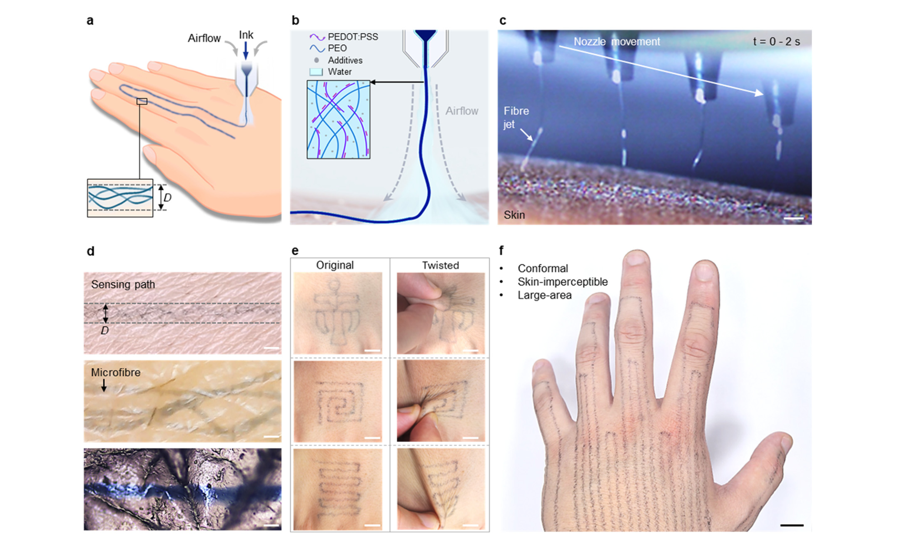
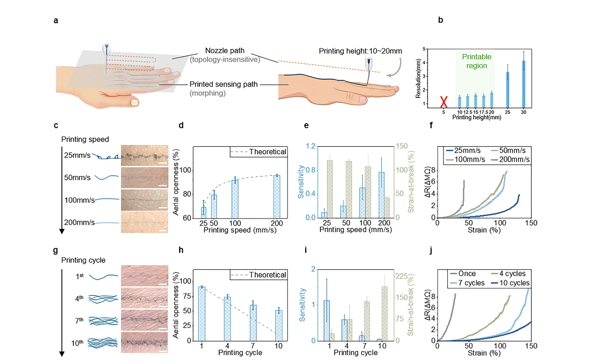
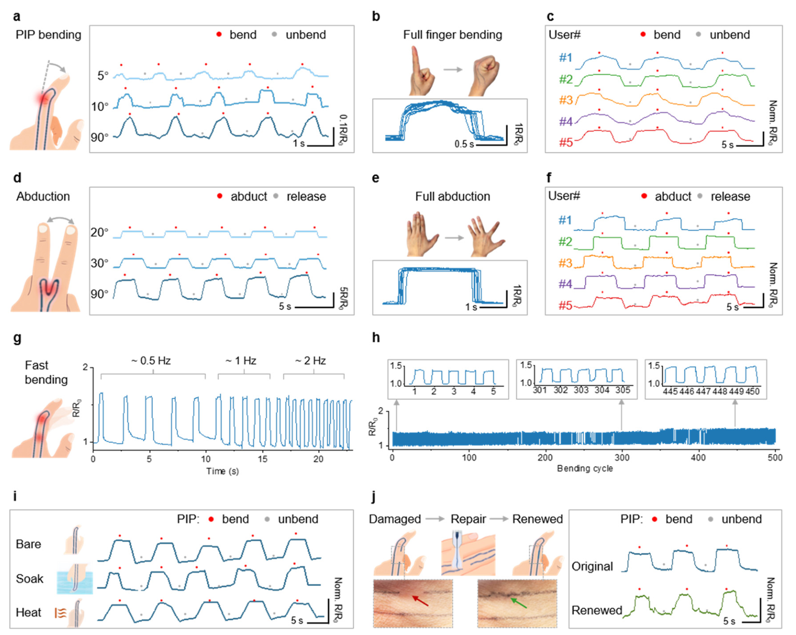
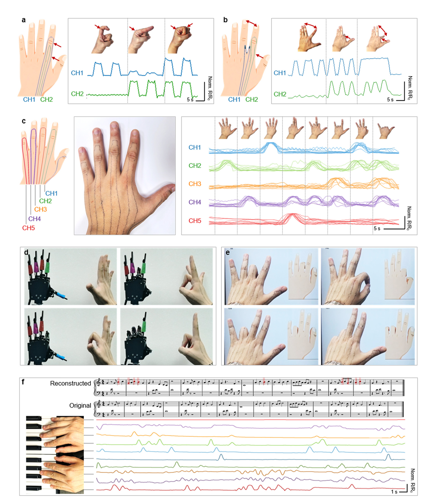
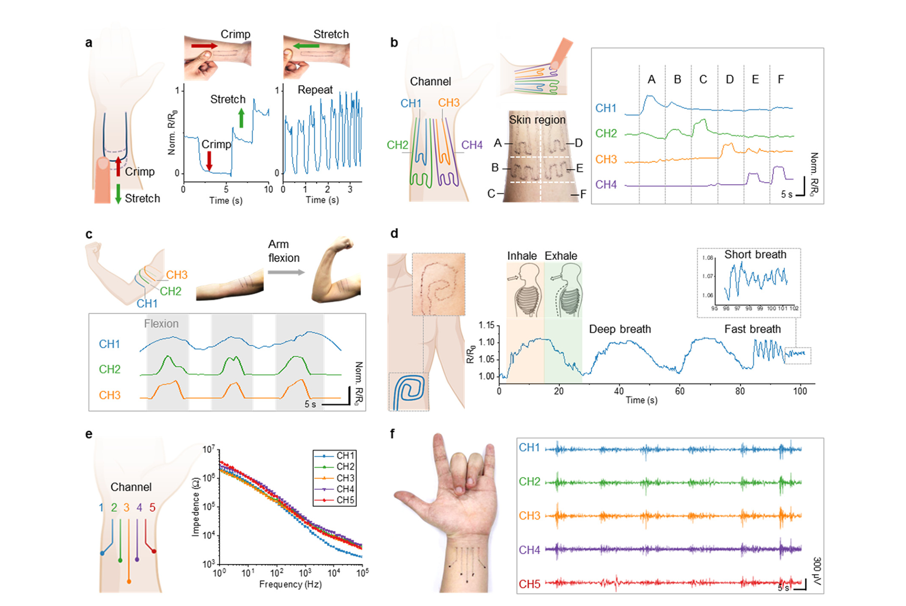

FIG. 1
制造逻辑：不是把薄膜贴上去，而是在身体曲面上原位“织”出线路
第一图把论文的概念闭环讲清：连续纤维如何形成、为什么能贴合皮纹、怎样在扭曲皮肤上保持图案，以及大面积部署究竟长什么样。

作者不用先在平面基底上造好器件再转贴，而让同轴喷嘴在皮肤上方移动：温和气流把黏弹性 PEDOT:PSS/PEO 墨水牵成连续微纤维，直接沿身体曲面沉积成电阻式传感路径。单根纤维厚约 288 nm，开放网孔让皮肤仍可自由形变；路径图案又把不同关节或皮肤区域预先映射成独立通道，因此很多动作无需机器学习，只用校准和规则就能实时解码。
证据边界：本页依据用户提供的 RSC 正式论文 PDF，展示的是五张主图的完整图体，不分发原始 PDF。主文中“十名参与者”的证据对应部分手指/手势跨人测试；触觉、呼吸、肌电、耐久和修复多为代表性演示，不能自动外推为十人统计或长期可穿戴验证。
皮肤传感长期存在一个三难：覆盖面积大、局部动作分辨率高、佩戴几乎无感，往往无法同时满足。本文的核心贡献不是再做一片柔性薄膜，而是把“贴合身体”从转移装配问题改写成原位制造问题：人体本身就是模板，连续微纤维落下时同时适配宏观曲面和微观皮纹。打印速度与重复遍数再用来调节灵敏度—伸展性权衡，最终以物理通道布局降低后端算法复杂度。
第一图把论文的概念闭环讲清：连续纤维如何形成、为什么能贴合皮纹、怎样在扭曲皮肤上保持图案，以及大面积部署究竟长什么样。

这张图是论文最重要的工程定量证据。作者没有声称一个配方能自动兼顾所有性能，而是把路径开放度、灵敏度与断裂应变之间的冲突显式画出来。

作者先把传感路径跨过目标关节，再用相对电阻变化读取皮肤拉伸。主图覆盖小角度、跨人、快动作、耐久与修复，强项是演示链完整；弱项是很少报告角度回归误差、漂移或统计显著性。

每条路径只负责一个关节或手指，开放/握拳两点校准后，实时电阻可直接转成离散姿势。这样做牺牲了对任意动作的通用性，却换来低数据量、易解释和跨参与者快速部署。

最后一图利用路径形状与材料接触阻抗展示六种能力。它说明平台的可设计性很强；各任务却没有统一基准、完整样本量或外部真值，因此不能把所有波形合并成一个成熟的健康监测系统。

方法补充：墨水以 PEDOT:PSS/乙二醇导电溶液与含高分子量 PEO、透明质酸的水/乙醇基质混合；同轴喷嘴中心压力约 40 mbar、外层气流约 750 mbar。手指应用通常打印 4 遍，六区触觉为增强稳定性打印 7 遍，胸部呼吸为提高灵敏度只打印 1 遍。论文声明原始数据与代码已存入 Zenodo。
← 返回论文细读书架